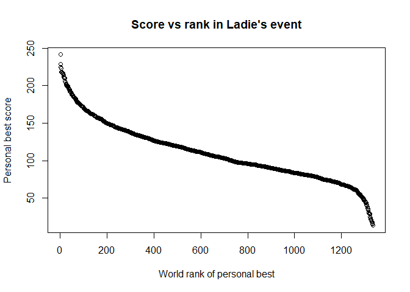
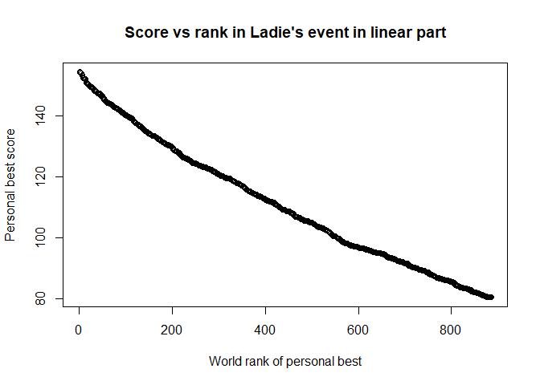

Today I am writing another piece about figure skating, also another piece about data analysis in this event. But I am not focusing solely on the Olympics this time but on the best scoring athletes and the best scoring event of each athlete. There is a lot of data to go through, so let’s get right into it! The data comes from the (International skating Union) website which I downloaded on the 20/01/2018 (if you try my code and the results are different it might be because the data on the website has changed). Reproducible blogging is important!
Personal Best for athletes: a first look at the data
I first load up the files I compiled from the data found on the ISU website. The ladies’ and men’s event are separated into two different files because the data is separated on the website and it wouldn’t make any sense to compare anyways. Let’s check out a few lines of each the dataframes to see how they are structured:
## rank Name NationID Event
## 1 1 Evgenia MEDVEDEVA RUS ISU World Team Trophy 2017
## 2 2 Yuna KIM KOR XXI Olympic Winter Games 2010
## 3 3 Adelina SOTNIKOVA RUS XXII Olympic Winter Games 2014
## 4 4 Alina ZAGITOVA RUS ISU Grand Prix Final 2017/18
## 5 5 Satoko MIYAHARA JPN ISU Grand Prix Final 2016/17
## 6 6 Mai MIHARA JPN ISU World Team Trophy 2017
## Date Score Category
## 1 20.04.2017 241.31 S
## 2 25.02.2010 228.56 S
## 3 20.02.2014 224.59 S
## 4 09.12.2017 223.30 S
## 5 10.12.2016 218.33 S
## 6 20.04.2017 218.27 S
## rank Name NationID Event
## 1 1 Yuzuru HANYU JPN ISU Grand Prix Final 2015/16
## 2 2 Shoma UNO JPN ISU CS Lombardia Trophy 2017
## 3 3 Javier FERNANDEZ ESP ISU World Championships 2016
## 4 4 Nathan CHEN USA ISU Four Continents Championships 2017
## 5 5 Boyang JIN CHN ISU World Championships 2017
## 6 6 Patrick CHAN CAN ISU GP Trophee Bompard 2013
## Date Score category
## 1 12/12/15 330.43 S
## 2 16/09/17 319.84 S
## 3 01/04/16 314.93 S
## 4 19/02/17 307.46 S
## 5 01/04/17 303.58 S
## 6 16/11/13 295.27 S
This data is very rich, it’s perfect for us. Let’s break it down and look a little more specifically. Last time I was very interested in how France did. I was talking with a Turkish friend and she wondered what her fellow Turkish did in the sport, so let’s look at Turkish athletes for a change:
## rank Name NationID Event
## 293 286 Tugba KARADEMIR TUR European Championships 2008
## 420 410 Guzide Irmak BAYIR TUR ISU JGP Brisbane 2017
## 502 487 Sila SAYGI TUR European Championships 2013
## 550 531 Birce ATABEY TUR ISU CS Denkova Staviski Cup 2015
## 572 552 Ilayda BAYAR TUR ISU JGP Riga Cup 2017
## 573 553 Elif ERDEM TUR ISU JGP Croatia Cup 2015
## 714 685 Sinem KUYUCU TUR ISU CS Denkova Staviski Cup 2015
## 750 718 Selin HAFIZOGLU TUR ISU JGP Czech Skate 2013
## 784 748 Melisa Sema ATIK TUR ISU JGP Sencila Bled Cup 2012
## 822 781 Ekin SAYGI TUR ISU JGP Minsk Arena Cup 2017
## 845 802 Zeynep Dilruba SANOGLU TUR ISU JGP Cup of Austria 2015
## 1142 1073 Ecem ERTENLI TUR ISU JGP Bosphorus 2012
## 1183 1110 Duygu SEN TUR ISU JGP Austria 2011
## 1284 1210 Aybike KAHRIMAN TUR ISU JGP Bosphorus 2009
## 1293 1219 Buse COSKUN TUR Pokal der Blauen Schwerter 2004
## 1307 1233 Beril BEKTAS TUR World Junior Championships 2005
## Date Score Category
## 293 26.01.2008 138.73 S
## 420 26.08.2017 124.78 J
## 502 26.01.2013 119.27 S
## 550 23.10.2015 114.73 S
## 572 08.09.2017 113.06 J
## 573 10.10.2015 113.05 J
## 714 23.10.2015 101.95 S
## 750 05.10.2013 98.24 J
## 784 29.09.2012 96.70 J
## 822 22.09.2017 95.03 J
## 845 11.09.2015 93.52 J
## 1142 21.09.2012 73.84 J
## 1183 30.09.2011 70.75 J
## 1284 16.10.2009 52.52 J
## 1293 08.10.2004 49.54 J
## 1307 28.02.2005 41.34 J
As my friend warned me, Figure Skating is not really the national sport, they have yet to win a medal in the Olympics in this discipline but they do have a number of juniors that could provide an interesting suprise in a senior category. I havent’ really studied this category yet but if you’re interested in turkish figure skating they are bringing the ice dancing couple Alisa Agafonova / Alper Uçar.
Average Personal Best scores per country
Let’s look at the top 10 countries with best average PB:
## NationID mean_value
## 60 RUS 161.5981
## 35 JPN 152.4915
## 73 USA 147.2498
## 12 CAN 129.0514
## 38 KOR 126.5404
## 67 SWE 124.7574
## 13 CHN 124.5560
## 34 ITA 119.2320
## 21 FRA 118.2176
## 24 GER 116.3685
## NationID mean_value
## 49 RUS 194.9438
## 6 BEL 187.8933
## 60 USA 186.8308
## 12 CHN 185.5706
## 31 JPN 181.2509
## 19 FRA 172.8991
## 11 CAN 171.9211
## 52 SRB 170.6200
## 21 GEO 170.2317
## 39 MON 167.8100
Russia is well above any other country both in ladies’ and men’s events, as expected. But below that there is a difference between the two events: in ladies’ Japan is second, and to my surprise USA is actually 3rd, so they’re not that bad after all. In men’s events, Belarus is second and again USA is third. In both events France is in the top 10, it could be worse, and it looks like our men’s events are better. China is also in both top tens, their artistic component is really good. Canada is also in both lists although I expected them to be higher up than fourth and seventh respectively. Italy is in the ladies top ten but not in the men top 10. Other countries I don’t know so much about in this sport and were a bit of a surprise.
Rank vs score plot
Now we have a pretty good idea of the countries that usually come on top but let’s focus on the athletes rather than their countries now and look at the plot of scores and ranks:

The plot of rank according to score is interesting, it is a sigmoid. It shows a huge chunk of competitive athletes in the middle where the drop in rank and score is more linear. On the right side lower in the ranks, the scores tend to drop really fast under 50 points. On the left side up in the ranks, above 150 the scores become exponentially higher.
A linear regression model to predict the rank according to the score
Let’s build a very simple regression model which will work in the middle part of the plot. Regression models, are a way to predict given a value of rank here, the corresponding score. The reason this is interesting here, is say I am rank 601 overall in the world for PB and I want to know what score I will need to have to be rank 600 (come up a rank). This regression model will tell you, which doesn’t make you better at skating, but can help you understand what kind of an effort you need to put in to do that. So this model doesn’t take into account the fact that towards the ends of the plot it is no longer linear, so it is not perfect, but it is a model. Let’s see how good it is:
##
## Call:
## lm(formula = Score ~ rank, data = ISU_ladies_df)
##
## Coefficients:
## (Intercept) rank
## 175.2582 -0.1018
## (Intercept) rank
## 175.2582253 -0.1018119
## [1] "Predicted Score with rank 601: 114.069277725803"
## [1] "Predicted Score with rank 600: 114.171089618544"
So if I am rank 601 according to the model my score is 114.069277725803 and if I want to jump to rank 600 I have to have a score of 114.171089618544 so I want to add 0.1018119. But let’s see how good our model is by pulling up the actual numbers:
## [1] "Actual Score with rank 601: 108.77"
## [1] "Actual Score with rank 600: 108.86"
The model as expected is not perfect but the difference to get from one rank to the other in reality is 0.09. Let’s try to make it a little better!
Building a better model using only the linear part of the plot
We will subset only the part of the plot that is pretty linear and remove those extreme values at the ends and use the same commands as before on that subset.

##
## Call:
## lm(formula = Score ~ rank, data = new_model_df)
##
## Coefficients:
## (Intercept) rank
## 161.95347 -0.08542
## (Intercept) rank
## 161.95347226 -0.08541764
## [1] "Predicted Score with rank 601: 110.617471176053"
## [1] "Predicted Score with rank 600: 110.702888815125"
## [1] "Actual Score with rank 601: 108.77"
## [1] "Actual Score with rank 600: 108.86"
That’s much better! the difference to get from one rank to the other in reality is 0.09. The model still isn’t perfect because the plot isnt’ completely linear.
Testing the model on the men’s data
Let’s do the same thing for the men’s data:


##
## Call:
## lm(formula = Score ~ rank, data = men_model_df)
##
## Coefficients:
## (Intercept) rank
## 219.9326 -0.1731
## (Intercept) rank
## 219.9325997 -0.1731332
## [1] "Predicted Score with rank 601: 115.879553288167"
## [1] "Predicted Score with rank 600: 116.052686476926"
## [1] "Actual Score with rank 601: 118.59"
## [1] "Actual Score with rank 600: 118.65"
For the men’s data the difference to get from one rank to the other in reality is 0.06. It looks even better than in the ladie’s data.
There is lots more to do with this data but for today that’s all.
Sciathlete
Here is the code for those interested in how I did this:
#loading libraries and reading data from ladies' and mens' events
library(readODS)
ISU_ladies_df <- read_ods("ISU_events_PB_ladies.ods")
ISU_men_df <- read_ods("ISU_events_PB_men.ods")
#showing the first six rows of the dataframes
head(ISU_ladies_df)
head (ISU_men_df)
#subsetting the athletes from turkey
athletes_turkey <- ISU_ladies_df[ISU_ladies_df$NationID == "TUR",]
athletes_turkey
#calculating the mean score values and showing the first 10 values
library(plyr)
score_nations_ladies <- ddply(ISU_ladies_df, .(NationID), summarize, mean_value = mean(Score))
score_nations_ladies <- score_nations_ladies[order(-score_nations_ladies$mean_value),]
head(score_nations_ladies, n=10)
score_nations_men <- ddply(ISU_men_df, .(NationID), summarize, mean_value = mean(Score))
score_nations_men <- score_nations_men[order(-score_nations_men$mean_value),]
head(score_nations_men, n=10)
#generating the ladies plot
plot(ISU_ladies_df$Score, main="Score vs rank in Ladie's event", xlab="World rank of personal best", ylab="Personal best score")
#calculating the coefficients and predictions
scores.lm = lm(Score ~ rank, data=ISU_ladies_df)
scores.lm
coeffs = coefficients(scores.lm)
coeffs
pred_601 = data.frame(rank=601)
#looking up the actual values and comparing them
real_score_601 <- predict(scores.lm, pred_601)
print(paste0("Predicted Score with rank 601: ", real_score_601))
pred_600 = data.frame(rank=600)
real_score_600 <- predict(scores.lm, pred_600)
print(paste0("Predicted Score with rank 600: ", real_score_600))
real_score_601 <- ISU_ladies_df[ISU_ladies_df$rank == 601,]$Score
real_score_600 <- ISU_ladies_df[ISU_ladies_df$rank == 600,]$Score
print(paste0("Actual Score with rank 601: ", real_score_601))
print(paste0("Actual Score with rank 600: ", real_score_600))
#calculating the new model with only the linear part of the plot
new_model_df <- ISU_ladies_df[(ISU_ladies_df$rank < 1000 & ISU_ladies_df$rank > 175),]
plot(new_model_df$Score, main="Score vs rank in Ladie's event in linear part", xlab="World rank of personal best", ylab="Personal best score")
scores.lm = lm(Score ~ rank, data=new_model_df)
scores.lm
coeffs = coefficients(scores.lm)
coeffs
pred_601 = data.frame(rank=601)
real_score_601 <- predict(scores.lm, pred_601)
print(paste0("Predicted Score with rank 601: ", real_score_601))
pred_600 = data.frame(rank=600)
real_score_600 <- predict(scores.lm, pred_600)
print(paste0("Predicted Score with rank 600: ", real_score_600))
real_score_601 <- ISU_ladies_df[ISU_ladies_df$rank == 601,]$Score
real_score_600 <- ISU_ladies_df[ISU_ladies_df$rank == 600,]$Score
print(paste0("Actual Score with rank 601: ", real_score_601))
print(paste0("Actual Score with rank 600: ", real_score_600))
#applying the new model to the men's data
plot(ISU_men_df$Score, main="Score vs rank in Men's event", xlab="World rank of personal best", ylab="Personal best score")
men_model_df <- ISU_men_df[(ISU_men_df$rank < 750 & ISU_men_df$rank > 175),]
plot(men_model_df$Score, main="Score vs rank in Men's event in linear part", xlab="World rank of personal best", ylab="Personal best score")
scores.lm = lm(Score ~ rank, data=men_model_df)
scores.lm
coeffs = coefficients(scores.lm)
coeffs
pred_601 = data.frame(rank=601)
real_score_601 <- predict(scores.lm, pred_601)
print(paste0("Predicted Score with rank 601: ", real_score_601))
pred_600 = data.frame(rank=600)
real_score_600 <- predict(scores.lm, pred_600)
print(paste0("Predicted Score with rank 600: ", real_score_600))
real_score_601 <- ISU_men_df[ISU_men_df$rank == 601,]$Score
real_score_600 <- ISU_men_df[ISU_men_df$rank == 600,]$Score
print(paste0("Actual Score with rank 601: ", real_score_601))
print(paste0("Actual Score with rank 600: ", real_score_600))